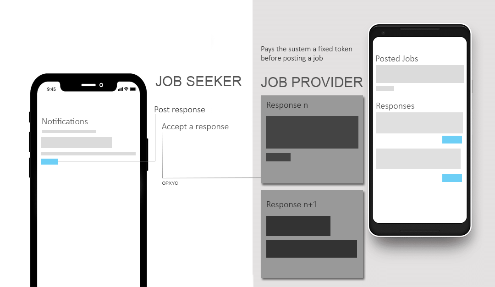

Bit about Ube
This is a simple representation of the front ends for it's users.
Ube is a service based product which acts as a medium between a job provider and a job seeker.
The target of the product is mainly college students and the type of job or service proposed through
the platform is preferably part time jobs.
For example, a person in need of a PC repair or catering job pushes a post in the application ( which will be developed if this is taken forth) with his details, type of job and location. He should pay a fixed token (say 10 rupees) for posting this feed.
A job seeker, who has registered in this service, get notifications sorted based on his skills and location. He comes to know about that job posted and pushes an "interested" request.
This request is validated by the job provider and then responds accordingly. This is then delivered to the seeker. If it's a positive response, he can get along with this work.
For example, a person in need of a PC repair or catering job pushes a post in the application ( which will be developed if this is taken forth) with his details, type of job and location. He should pay a fixed token (say 10 rupees) for posting this feed.
A job seeker, who has registered in this service, get notifications sorted based on his skills and location. He comes to know about that job posted and pushes an "interested" request.
This request is validated by the job provider and then responds accordingly. This is then delivered to the seeker. If it's a positive response, he can get along with this work.
Doesn't this service already exist?
In a general view, it does exist, many of them actually. But we are limiting their scope , adding some constraints and including some more features to make
it better. For example, naukri, freelancer
etc provides a kind of service with this nature. But they are highly global and sets up a platform for
people from highly different localities to interact with each other.
How are we different?
The difference is in the fact that we sets up an environment where jobs feeds are made available to a job seeker based on a locality rather than flooding him with all the available jobs based on a skill.
This helps the environment to get more acceptable and becomes more convenient to use and interact.
Second thing is that we do not force the giver and taker to get payments transected through us. They can have their own means. The only benefit, at initial stage, is the token that a job provider has to pay prior to the posting of each job which is a fixed amount.
How are we different?
The difference is in the fact that we sets up an environment where jobs feeds are made available to a job seeker based on a locality rather than flooding him with all the available jobs based on a skill.
This helps the environment to get more acceptable and becomes more convenient to use and interact.
Second thing is that we do not force the giver and taker to get payments transected through us. They can have their own means. The only benefit, at initial stage, is the token that a job provider has to pay prior to the posting of each job which is a fixed amount.
Ube is a name not yet fixed.